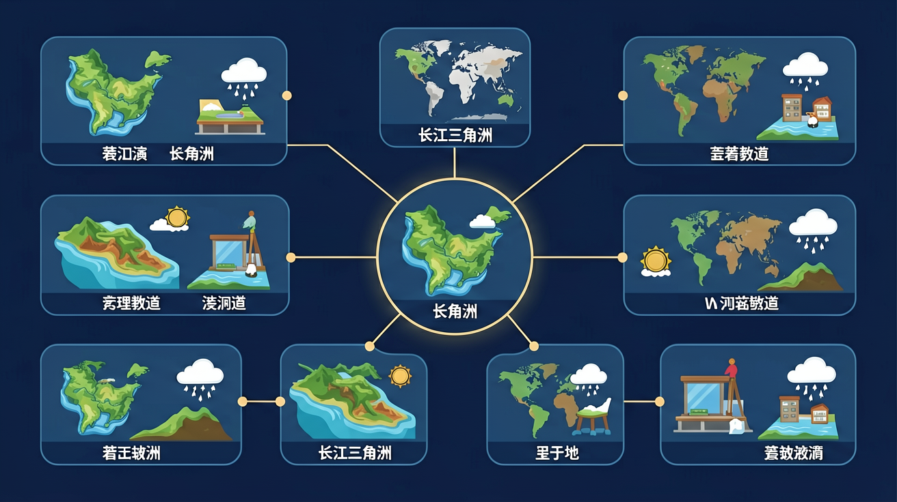

运用地图和相关资料，描述长江、黄河的特点，举例说明其对经济发展和人们生活的影响。
❓ 为什么长江三角洲被称为'鱼米之乡'？
❓ 上海为啥能成为长三角的'老大'？
❓ 这里工厂这么多，为啥空气还能这么好？
学完这一课，这些问题你都能自信地回答。
🎯 能说出长江三角洲的3个核心地理特征
🎯 能分析长三角水运发达的经济影响
🎯 能判断区域发展措施是否符合可持续发展
长江三角洲的核心城市是？
下列不属于长三角优势的是？
长江三角洲是初中地理的重要内容。运用地图和相关资料，描述长江、黄河的特点，举例说明其对经济发展和人们生活的影响。
运用地图和相关资料，说出某区域的地理位置和自然地理特征，说明自然条件对该区域经济社会发展的影响，认识因地制宜的重要性。
长三角地处长江入海口，地势低平，水网密布，气候湿润，交通便利，是我国经济最活跃的区域之一。城市密集，工商业发达，一体化发展强调协作与优势互补。
拖动缩放地图，点击城市标记查看气候或区域说明；可开河流图层对照。
1. 误认为长江三角洲完全由长江冲积形成：学生常将2.3万平方公里的三角洲全部归因于长江泥沙沉积（年均输沙量4.8亿吨），实际上钱塘江和东海潮汐共同塑造了南部地貌。这种误解源于教材对"潮坪地貌"（tidal flat）的淡化，例如杭州湾北岸的漕泾湿地就是典型的潮汐沉积区，其沉积物粒径（0.02-0.05mm）明显细于长江主河道沉积（0.1-0.3mm）。
2. 混淆"核心区16市"与"城市群26市"范围：考试中常见将南通划入核心区（实际属于城市群扩展区），这是对2016年《长三角城市群发展规划》的误读。核心区严格指代沪苏浙皖交界的16个地级市，如2022年GDP达4.2万亿的苏州工业园区就属于核心区，而GDP1.1万亿的盐城则属于规划中的辐射区。
3. 低估河网密度对农业的影响：面对"为何水稻亩产超600kg"的题，学生多答"气候温暖"，忽略6.4km/km²的河网密度才是关键。明代《农政全书》记载的"圩田体系"至今仍在运作，例如湖州菱湖镇的"鱼稻轮作"模式，利用密集河网实现年产值3.8万元/亩，是纯旱作农业的4.2倍。
复制提示词到 AI 学伴，生成「长江三角洲」的示意图或结构提纲；也可以上传你手绘的示意图，请 AI 学伴点评。
复制后可粘贴到 AI 学伴继续对话。
从位置、交通、腹地、人才、政策等列出发展条件，再谈城市化与产业。
常见误区：常见误区是只知上海不知区域整体，或忽视洪涝等环境问题。
长三角发展的突出优势包括？
1. 上海洋山港自动化码头：全球最大集装箱港的选址直接运用了三角洲前缘深水岸线知识。L4级无人集卡依托对长江主泓（main channel）南偏5°的精确测绘，使40万吨级货轮吃水深度控制在16米内，2023年吞吐量突破4900万标准箱。
2. 太湖蓝藻预警系统：中科院南京地理所通过反演1990-2022年太湖营养盐输入数据，建立流域模型。当卫星遥感显示叶绿素a浓度＞40μg/L时，自动触发湖州-无锡联合调度机制，2023年蓝藻暴发面积同比减少62%。
3. 绍兴纺织业转型：基于三角洲土壤承载力8-12t/m²的研究，柯桥区将3.2万家纺织厂整合为197个产业园。采用"地下污水处理+地上光伏"的立体模式，单位GDP能耗从2015年0.78吨标煤降至2023年0.41吨。
1. 为何长江口北支正在萎缩？对比1855年与2020年地图可见，北支宽度从18km缩至3km。从科氏力（Coriolis force）和潮汐不对称性角度分析：长江主泓受地转偏向力影响持续南偏，而东海前进潮波在崇明岛东端形成流速差，导致北支年均淤积量达1.2亿m³。思考：这种变化对启东港的航运功能意味着什么？
2. 长三角"Z"字形高铁网的地理逻辑：观察沪宁杭高铁走向，为何不采用直线连接？从基底断裂带（basement fault）和软土层分布来看，苏州-湖州段需绕行太湖南缘避开吴江沉降区（年均沉降速率＞20mm）。如果要在嘉兴规划磁浮线路，需要收集哪些岩土工程参数？
先看长江入海口那浑黄的"鸟爪状"卫星图，这是年均4.8亿吨泥沙遇到东海潮汐顶托形成的典型radial状三角洲。当明代治水专家潘季驯提出"束水攻沙"时，就已触及现代地貌学核心——河流动力与海洋动力的博弈。接着定位到31°N,121°E这个坐标，上海陆家嘴摩天楼群正矗立在距今7000年前的古海岸线上，这里1.2万年来沉积了厚达300米的第四纪地层，造就了承载力惊人的地基。
当我们将比例尺缩放到1:50万，会看见太湖就像镶嵌在三角洲上的蓝宝石。这个2427km²的潟湖（lagoon）其实是古长江的弃河道，北宋单锷《吴中水利书》记载的"三江既入"指的就是它连通长江的古水道。最后聚焦当代，长三角城市群正在复刻德国莱茵鲁尔区的产业布局：上海张江的芯片设计（设计环节）、苏州工业园的晶圆制造（制造环节）、合肥的封装测试（配套环节），形成了一条基于冲积平原交通优势的完整产业链。2023年这里以2.2%的国土面积贡献了全国24%的GDP，每平方公里铁轨密度达12.8公里，是德国北威州的1.7倍。这种空间效率的秘密，就藏在沉积旋回（sedimentary cycle）造就的均质平原里。
关于长三角"同城效应"，正确的是
分析上海到南京的高铁班次密度
先独立作答，再点选项查看对错与错因。
小宁观察到高铁沿线农业用地减少，主要因为长三角地区
南京南站下车乘客多，说明该城市最可能是
湖州旅游广告反映长三角
长三角核心城市上海主要承担____职能，周边城市如苏州侧重____。
答案：金融服务/制造业
城市群分工协作典型表现
长江泥沙在入海口沉积形成____地貌，使上海陆地面积每年增长约____平方公里。
答案：三角洲/5
自然地理与人类活动相互作用
（中考题）长三角建设'生态绿色一体化示范区'主要考虑：
若在安徽新建产业园，最应借鉴长三角的：
模拟市长决策：优先发展？
✅ 展示生态工业园区案例
💡 混淆传统工业与新型工业化
✅ 分析太湖水利工程作用
💡 忽视人类治理能力
迁移任务：找一道与「长江三角洲」相关的练习题或生活情境，用本课方法完整解答一遍。
口诀：一江两翼三中心，水陆空铁样样行
类比：像乐高基地：长江是底板，港口是连接件，城市是模块
复述本课两个核心概念的定义。
用本课方法分析一个新例子。
有同学认为：认为所有工厂都是污染源 —— 请说明错在哪里。
有同学认为：把河网密度大等同于洪涝多 —— 请说明错在哪里。
把还没弄明白的地方写下来问 AI 学伴。它会先帮你找到卡住的地方，再给你一个小小的提示，让你自己往前走一步。